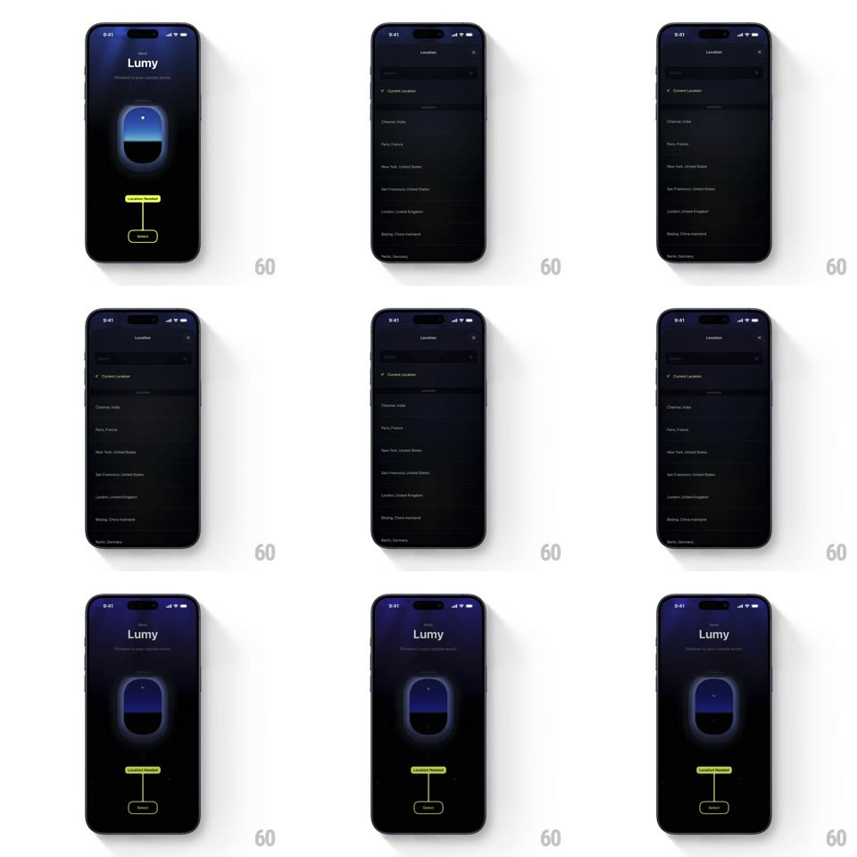

Media
Frame-by-frame

Rebuild this interaction 1:1: Lumy's location picker - a "Location Needed" coachmark points at the Select button; tapping slides up a Locations sheet (Current Location plus a scrollable city list), and picking a city dismisses the sheet while the window illustration updates to match.

Rebuild this interaction 1:1: Lumy's location picker - a "Location Needed" coachmark points at the Select button; tapping slides up a Locations sheet (Current Location plus a scrollable city list), and picking a city dismisses the sheet while the window illustration updates to match. ## Integration Integration: stack-agnostic spec - springs given as stiffness/damping, timed motions as duration + curve; map every value to your framework and animation library of choice. ## Scene Dark onboarding: "Lumy" title and subline, a glowing rounded window illustration (blue sky gradient), and a yellow "Location Needed" coachmark with a tail pointing at a "Select" pill. The Locations sheet: search field, "Current Location" row, and a city list (Chennai, Paris, New York, San Francisco, London, Beijing, Berlin, Tokyo). ## Motion spec Pattern: sheet pick with illustration update, ~450ms. - Open: the sheet slides up (spring ~360/28, 350ms) over a dimming scrim (0 -> 50%); the coachmark fades out (200ms). - List: rows cascade in (25ms stagger, 250ms) after the sheet lands; the list scrolls with standard momentum. - Select: the tapped row flashes highlight (150ms), the sheet slides down (300ms), and the window illustration crossfades its sky content to the new location (400ms) with a soft glow pulse (scale 1 -> 1.04 -> 1, spring ~380/18). - Current Location: same motion, with a locate spinner (300ms) before the illustration updates. ## Calibration - The illustration updates only after the sheet fully dismisses - the reveal lands on the clean screen. - The coachmark never reappears once a location is set. ## Reduced motion Sheet slides without spring; illustration crossfades without the glow pulse. ## Don't miss - The window is the payoff: the sky inside it changes, the frame and glow stay. - The sheet's X and swipe-down both dismiss without selection - no illustration change then.